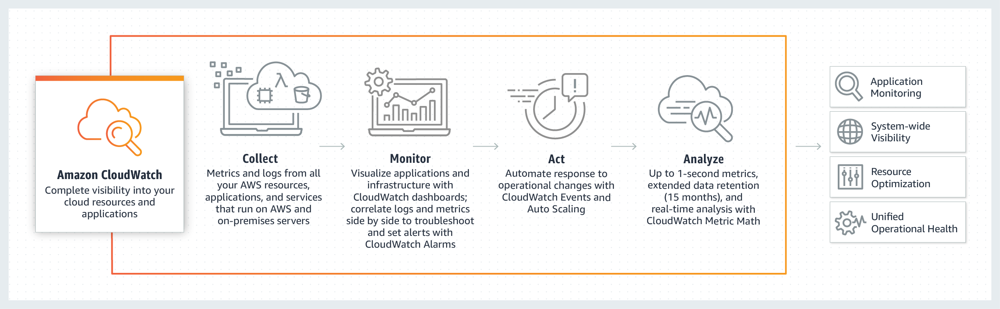
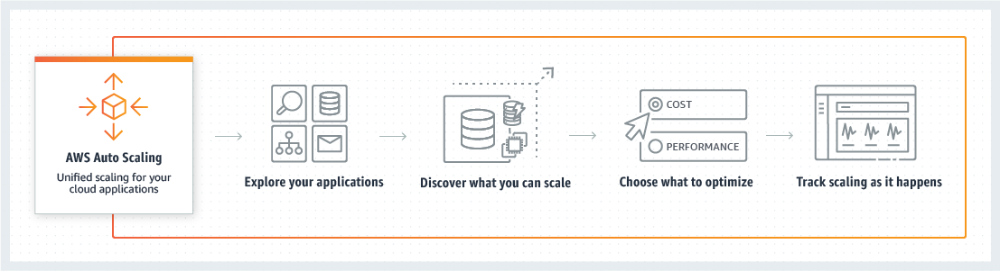

客户简介：
深圳星创成立于2013年底，是一家国内初创的海外手机应用内容提供商。公司可提供覆盖从功能机到智能机等不同机型的丰富手机应用及游戏产品。
公司主要成员均具备多年手机行业的从业经验，有资深的行业技术背景和市场开拓经验。公司陆续与法国、新加坡、韩国、西班牙、葡萄牙、俄罗斯、巴西、埃及、越南等近40个国家的通道和内容提供商建立了长期稳固的合作关系，在给海外用户提供符合当地习俗和风情的丰富内容的同时，也可以给合作伙伴获得长期稳定的业务收入。
经过将近5年的发展，公司已与多家手机公司开展了长期深入的业务合作，所提供的产品正在为海外近40个国家的用户提供内容服务。
面临的问题：
1. 随着体量增长、运维压力增长迅速。产生了『自动化部署应用程序和所有支持的软件和依赖』、『快速创建和复制资源模板』、『在弹性环境下部署实时监控』等等问题。现有运维团队面临严峻挑战。
2. 为了提升应用性能、客户希望在业务逻辑中引入Redis提高数据查询效率、但缺乏足够的开发人员推动进程。相似的、星创同时希望使用ELK架构对业务数据进行分析、从而驱动商业决策和业务深化。
3. 需要高质量CDN服务优化东南亚、北非等区域的访问体验。
Bosicloud解决方案
在和星创进行详细的需求分析和评估之后、博思云为和星创都认为迁移至亚马逊云科技后、亚马逊云科技针对计算资源和数据分析提供的多种服务能够完整解决星创现有问题。同时令星创拥有灵活的弹性架构和未来架构拓展的无限可能。
- 选择多可用区（AZ）部署保障了星创业务高可用性和高可靠性;
- Amazon Cloudwatch和Cloudtrail服务通过图形化界面UI,让运维人员快速建立全资源的管理控制台; 
- EC2 Autoscaling能保障业务的正常运转和资源的高效利用,在访问低谷时缩减资源以节约成本,在高峰期快速水平扩展支撑业务系统; 
- 针对Redis和Elasticsearch等服务、亚马逊云科技推出了全托管的Elasticache for Redis和Elasticsearch(集成Kibana)。通过此项服务、星创在进行逻辑和功能测试时、无需花费大量时间调试和管理基础环境。客户可以在几分钟内搭建起具有完整功能的Redis或Elasticsearch集群。
- 最后、博思云为帮助星创利用亚马逊云科技 Cloudfront在全球各个地区部署高性能的内容分发网络、加速内容分发、成功优化了访问体验。
最终架构图：
迁移成果( Outcome )：
在迁移至亚马逊云科技后，前端平均响应时间从100ms降低至50ms。通过使用托管的Redis服务--Amazon Elasticache，让数据库的QPS提升了40%。在购买了预留实例后，星创的年度IT成本下降了33%。